Solenoid Valves S1-S5, TCM
Solenoid valves S1-S5, TCM FA 57 (531)Location
Solenoid valves, TCM (531)
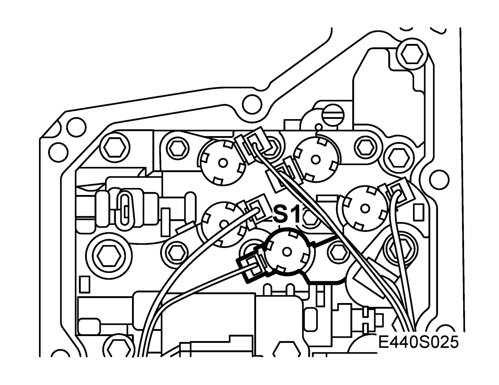
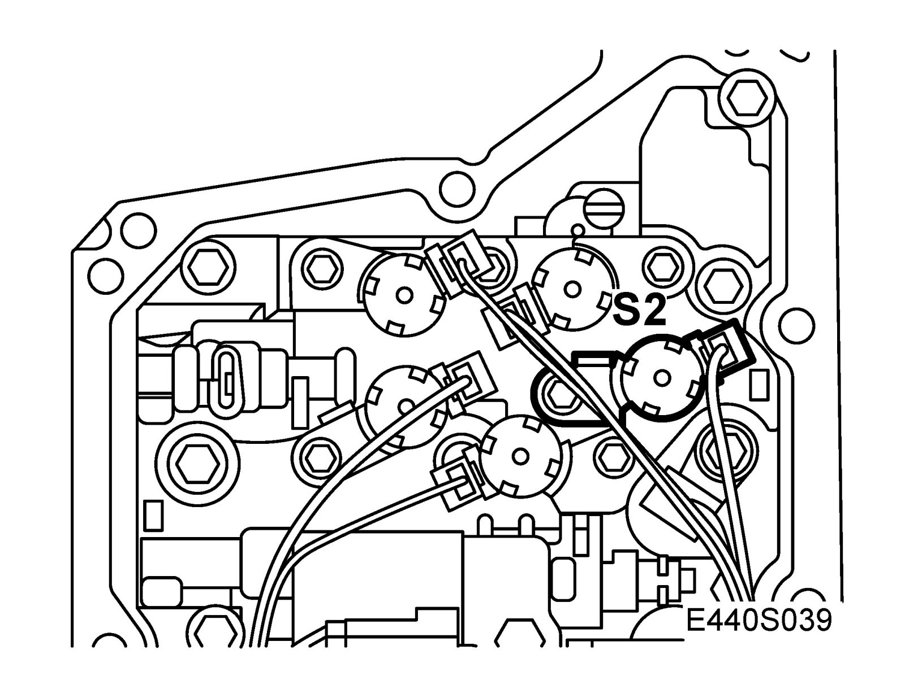
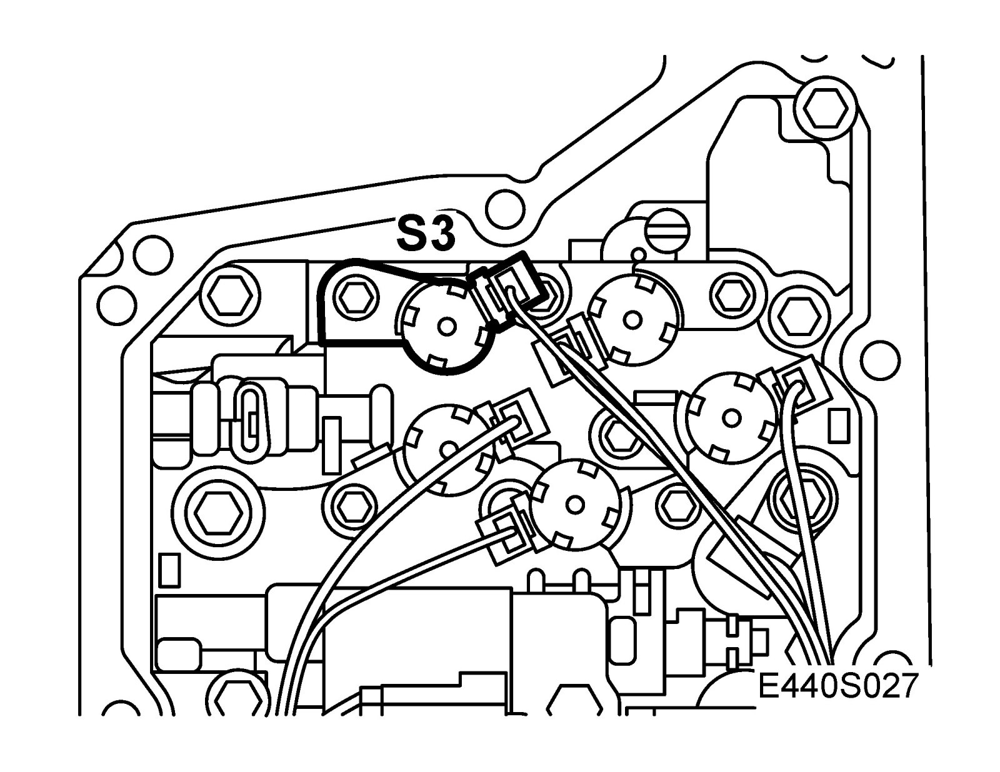
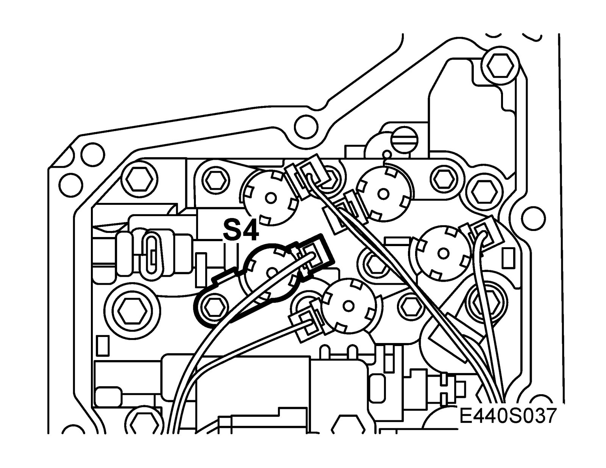
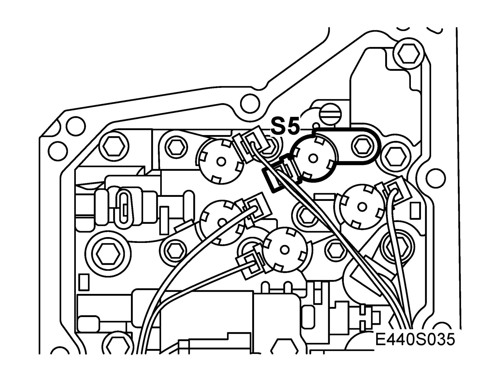
Main use
To open and close the flow of oil through the valve housing that results in a change of gear ratio.
Type
Electromagnetic.
Activation
The control module activates S1-S5 by making or breaking the circuit to B+. The solenoids are supplied with 0A or 1A from the control module (TCM). Grounding takes place through the solenoid casings.
S1 is supplied from pin 34 (B). The solenoid is hydraulically open when no current is applied.
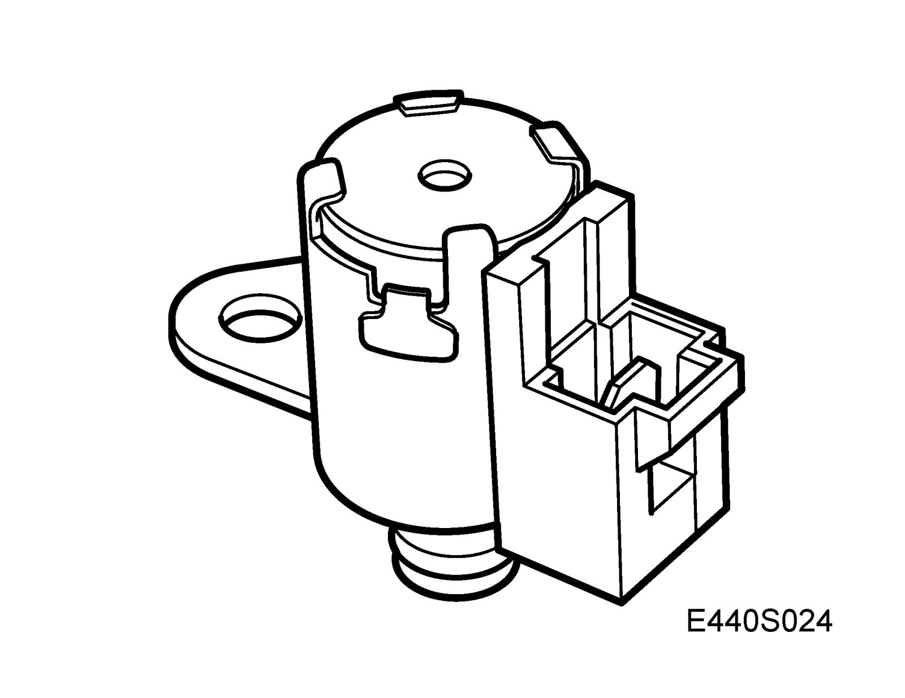
S2 is supplied from pin 24 (B). The solenoid is hydraulically open when no current is applied.
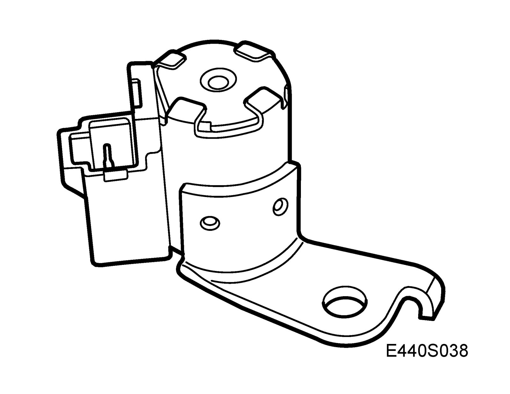
S3 is supplied from pin 8 (B). The solenoid is hydraulically closed when no current is applied.
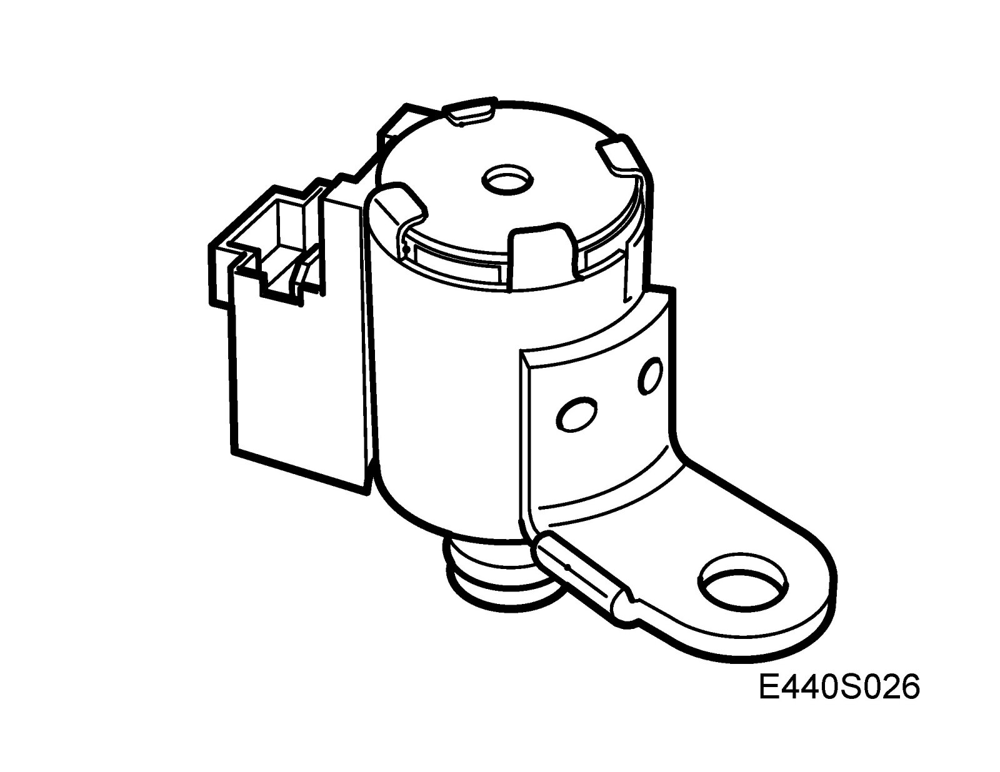
S4 is supplied from pin 14 (B). The solenoid is hydraulically open when no current is applied.
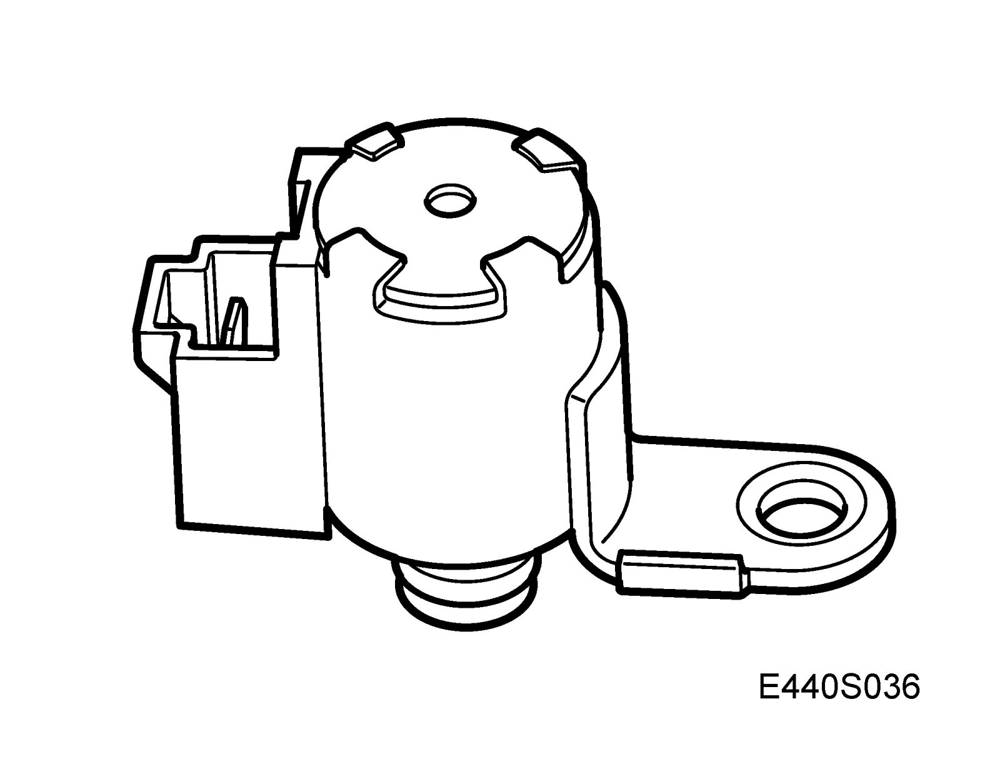
S5 is supplied from pin 13 (B). The solenoid is hydraulically closed when no current is applied.
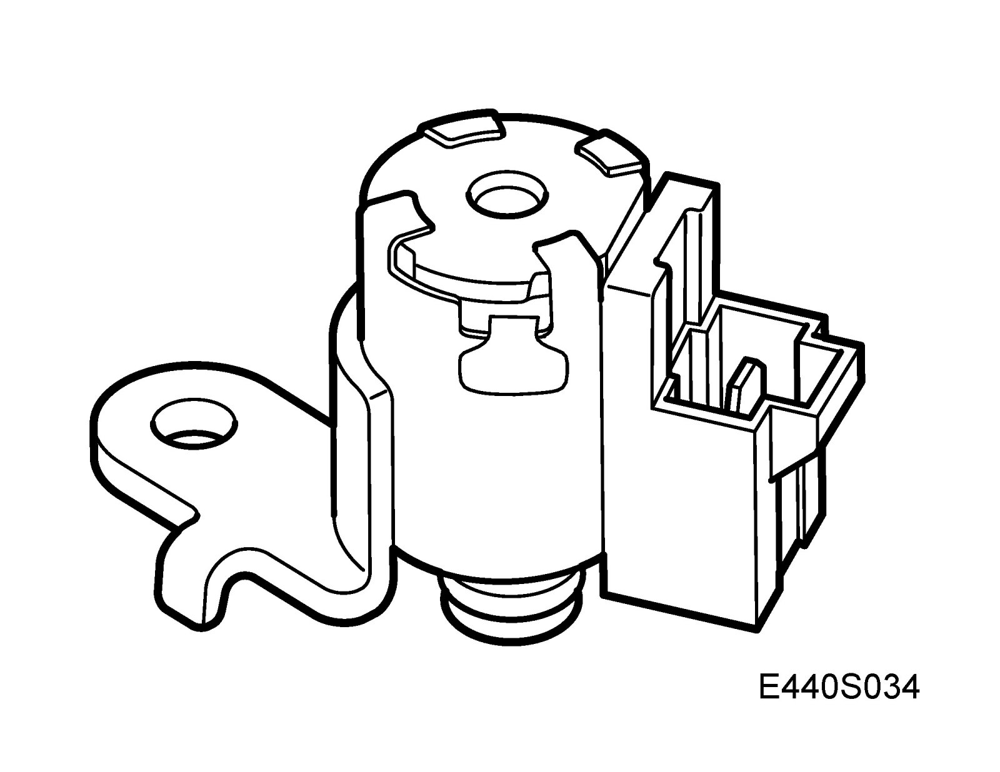
The control module activates the respective valve (S1-S5) for shifting up or down depending on the output speed, accelerator pedal position and the selected driving program.
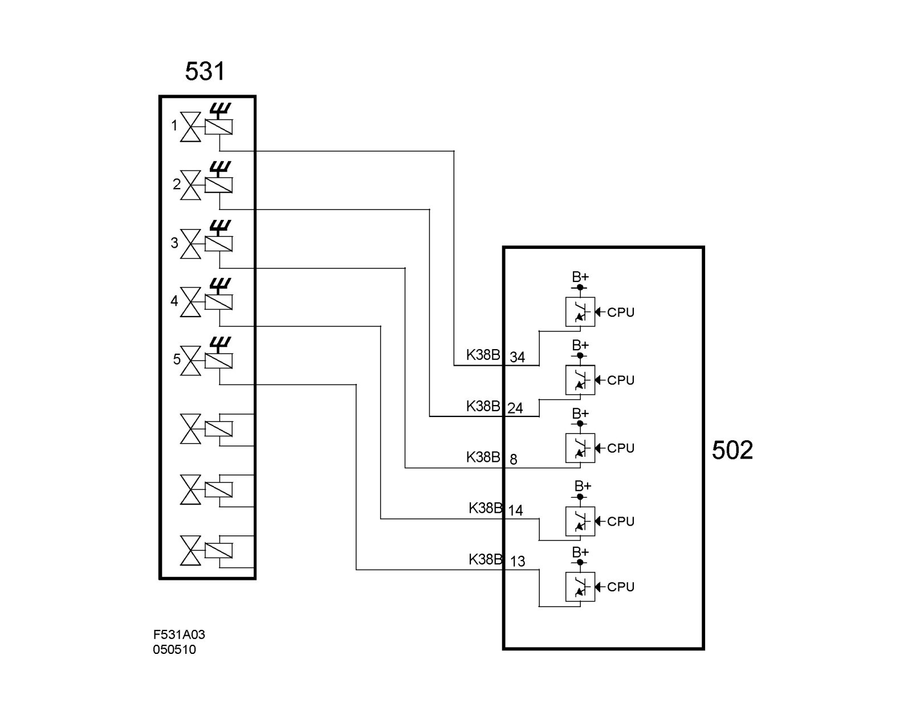
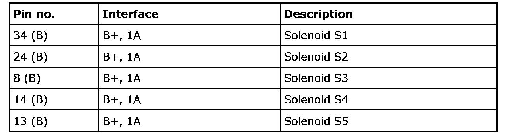
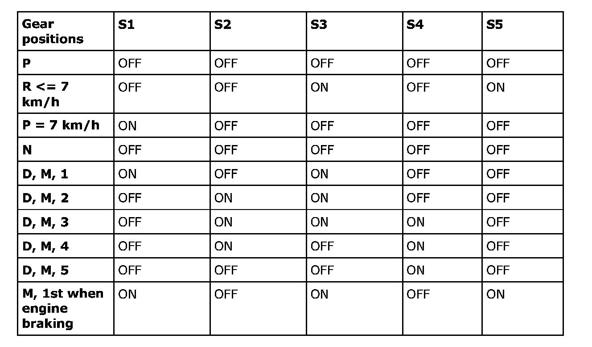
OFF = 0V, ON = B+
Winding resistance in solenoid S1 is rated 12-16 ohms at 20°C
Winding resistance in solenoids S2-S5 is rated 11-15 ohms at 20°C
Diagnostics:
In case of a fault in solenoid S1 fault code P0773 will be generated and the transmission will go into limp-home mode
In case of a fault in solenoid S2 fault code P0753 will be generated and the transmission will go into limp-home mode
In case of a fault in solenoid S3 fault code P0758 will be generated and the transmission will go into limp-home mode
In case of a fault in solenoid S4 fault code P0763 will be generated and the transmission will go into limp-home mode
In case of a fault in solenoid S5 fault code P0768 will be generated and the transmission will go into limp-home mode.